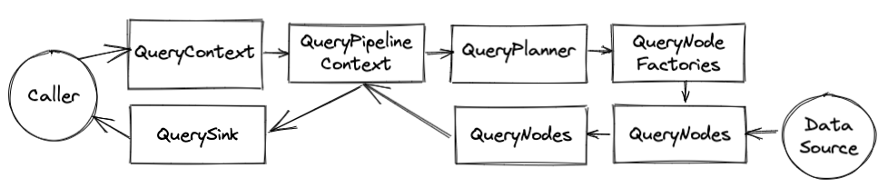

Query Path Development
OpenTSDB 1/2.x had a fixed query workflow. Rate -> Downsample -> Groupby -> optional expressions. That was it. V3 now has a DAG (directed acyclic graph) that allows for arbitrary ordering of operations similar to a traditional database. This, along with routing queries to various data sources and handling multiple data types, is pretty messy. Here’s an outline of the general query flow and components that are involved.
A good starting point to follow along is the Graph Query RPC JAX-RS servlet where a JSON query arrives, is processed, and the results serialized back to the caller.
QueryContext
This is the user or API facing component that keeps track of a query’s execution from start to finish (or error). The caller gives a TimeSeriesQuery to a builder for the context along with a sink to send results. These (along with a TSDB reference) are the two required parameters. Additional optional attributes can be set such as a tracer, auth state, etc.
Once the context has been created, the following steps are required to execute the query:
Call the
QueryContext.initialize(span)method and wait or add a callback to the deferred (equivalent of a Future). This call with perform the query planning and optimization. It may throw exceptions if problems were found with the query. In this case, the caller should catch those exceptions and pass them back to the user, particularly if they’reQueryExecutionExceptionerrors.If initialization was successful, call
QueryContext.fetchNext(span)to begin fetching and processing data.Results are sent to the
QuerySinkgiven to the context viaQuerySink.onNext(QueryResult). Once all results have been sent to the context and closed,QuerySink.onComplete()will be called to tell the sink the query is finished.
Warning
If the sink does not call QueryResult.close() on each query result to come it’s way, the query will hang. Calling this method tells the context that the result has been serialized and when all of the expected results are closed, the context will call QuerySink.onComplete().
The QueryContext also has some logging functions that can be invoked by the nodes for adding diagnostic information surrounding a query for serialization to the caller. This is really useful for tracing queries to various sources, figuring out what operations are pushed down, etc. Also for non-fatal warnings or errors like one source for an HA node being unavailable.
SemanticQuery
This is the main representation of a query, containing the DAG and serialization parameters. The goal is for it to be able to implement all kinds of query syntax definitions like V1 and V2 OpenTSDB queries, PromQL or Flux queries and even SQL. Therefore you’ll see converters that take the offered syntax and convert it to a SemanticQuery DAG. It’s not perfect of course but it seems to work well so far.
Documentation can be found at Semantic Query (Version 3)
QueryPipelineContext
The QueryContext contains a reference to a QueryPipelineContext which does the work of planning and handling the query execution. It’s similar to the query context but separate in order to hide internal details from API users.
The default implementation is the AbstractQueryPipelineContext class. It acts as a QueryNode and sits between the sink and the serializable nodes, intercepting the calls so that it can determine if a query should be failed or if all the results are in.
A query pipeline consists of QueryNode that are built from QueryNodeConfigs. Two type of nodes are special instances of QueryNode. The QuerySink which is the output of a query into a serializable format or for use by an API call and TimeSeriesDataSource which is an input a pipeline, fetching data to process through the pipeline. Each pipeline must have at least one sink and one source. Data flows from the sources to the sink meaning the source node pushes data to its predecessor in the graph by calling onNext(QueryResult) on the predecessor node.
When you look at the planner code that deals with the DAG, for a given node you’ll see calls to predecessors, meaning nodes closer to the sink, and ancestors, nodes that are closer to the source.
Note
The pipeline is asynchronous. When a query begins, the context will iterate over each TimeSeriesDataSource node and call TimeSeriesDataSource.fetchNext(span). Each source could call its predecessor in a different thread so be mindful of this feature.
QueryPlanner
The query planner is responsible for:
Building the DAG and validating that it’s acyclic.
Mapping a
QueryNodeConfigto theirQueryNodeFactoryand letting those factories mutate the graph via theQueryNodeFactory.setupGraph()methods.Pushing operations down to data source nodes when possible.
Instantiating
QueryNodesfromQueryNodeFactories.Determining how many
QueryResultobjects will flow through the DAG.Adding ID converters when ``TimeSeriesByteId` IDs are in play.
Linking serializable nodes to the
QuerySinkvia theQueryContextPipeline.
Currently the DefaultQueryPlanner is the only implementation and it’s workflow is as follows:
Build the Initial Graph
The planner walks through the list of QueryNodeConfig entries in the query execution graph and builds the DAG based on the config IDs and the config sources (the IDs of nodes that send data to the current config node). It will fail the query if there are duplicate node IDs or a cycle in the graph.
Validate and Mutate Graph
Next, the planner performs a depth-first recursive walk of the graph and validates that each QueryNodeConfig has a factory in the TSDB registry to handle it. If a config is missing a factory, the query will fail.
When a factory is found, the QueryNodeFactory.setupGraph() method is called, passing in the config, context and planner. This gives the factory a chance to mutate the graph or the config based on server configuration or other nodes in the graph. This step is very important and complex and messy. There are probably better ways to go about it but the reason it’s so messy is that QueryNodeFactories are plugins and developers can add new plugins at any time. So we need to be flexible and let them mutate the graph but it also allows for a world of trouble with nodes messing with other nodes.
A prime example of this the router factory for TimeSeriesDataSourceConfig (the class name may change. It was TimeRouterFactory. This factory is configured with a set of local, remote or further data source routers (like the HAClusterFactory) and figures out, based on the TimeSeriesDataSourceConfig and other query factors, what destinations should partake in the query. It may split the query across multiple sources or pick just one. Either way, the factory will remove its QueryNodeConfig and replace it with one or more node configs.
Any time a setup call mutates the graph, the recursive setup starts over again at the sources so that new node configs can be setup. Each node config also has a flag to mark that it has been setup so that it can be skipped on these recursive calls if there isn’t anything else to do.
Another operation here is to compute any missing result IDs. Each QueryNodeConfig has a list of one or more QueryResultId that provide an identifier for the results that it will emit to a predecessor node. Some nodes will operate on any results passed through them (e.g. Downsample) but others, like the Expression node, need to know the results it will receive and can only pass a result upstream once it has received all of the results. These QueryResultId objects are used to determine when all of the results are in. If a setup method hasn’t added IDs to a QueryNodeConfig then the planner will deduce them by walking the graph and update the config.
Initialize Filters and Converters
The next step is to initialize QueryFilter instances within TimeSeriesDataSourceConfig instances. These filters are plugins as well and may call external services asynchronously, hence they are initialized asynchronously in order to populate with results useful by a data source.
As mentioned above, if a data source returns time series IDs in an encoded form to save space and operations (e.g. the AsyncHBase driver uses byte IDs to avoid resolving UIDs to strings whenever possible) then a converter is likely needed before serializing the data. The planner will add a global converter just before the sink in situations where a converter has not been provided yet.
Verify Sink Filters
The next step is to make sure that any explicitly defined serialization filters are satisfied. By default, only the final nodes in the graph that do not have a data source pointed to them are serialized. However sink filters can be provided by the caller to serialize nodes that are sources to other nodes. E.g. a query may want a summary of each time series along with the timestamped time series. This would need an explicit filter.
If a node was removed due to a bug in the code when it was in a sink filter, the planner will throw an exception. This is usually the fault of a QueryNodeFactory.setupGraph() call.
Compute Pushdowns
With OpenTSDB V3’s flexible query engine, it’s now possible to query time series data from other systems and remote sources. To send as little data as possible over the network, operations that reduce data, like grouping and downsampling, should happen remotely before the data comes into the TSDB pipeline. Therefore the planner can examine each of the node configurations in the DAG and the data sources, determine if some of those operations are supported by the data source and if so, push those operations to the source and eliminate them from the DAG.
The planner performs another depth-first search from the sources. For each predecessor it checks:
QueryNodeConfig.pushDown()(soonQueryNodeConfig.nodeOption(QueryNodeConfigOptions.SUPPORTS_PUSH_DOWN)) and if false, stops there. If it’s true then it will:Check
TimeSeriesDataSourceFactory.supportsPushDown(QueryNodeConfig). If false it will stop there. If true it moves on to the next predecessor node until it hits the sink.
When the sink or a query node that can’t be pushed down is encountered and there is one or more nodes that can be pushed down, then the nodes are added to the TimeSeriesDataSourceConfig.getPushDownNodes() list and the source is linked to either the sink or the first predecessor that couldn’t be pushed down (a new edge is created).
Compute Serialization Sources
This step simply find the nodes that will be serialized and creates a list of QueryResultId objects for the QueryPipelineContext to keep track of, using this list to trigger the QuerySink.onComplete() call once all of the results have flowed through and the sink has closed them.
Build and Initialize Nodes
Up until this point we’ve been working with QueryNodeConfig objects that simply describe the execution graph. Finally we can instantiate QueryNode instances and place them in a processing DAG to start doing some work. To do so, the planner starts with the TimeSeriesDataSourceConfigs and performs a breadth-first walk of the graph up to the sink with the following steps:
The factory for the current
QueryNodeConfigis located andQueryNodeFactory.newNode(QueryPipelineContext, QueryNodeConfig)is called.On the newly instantiated node, ``QueryNode.initialize(span)` is called so the node can perform any work it needs before data starts to flow.
Because the initialize method is asynchronous, predecessor nodes are initialized on the callback from the previous initialization. This, and the fact that the nodes are initialized breadth-first means that each node is guaranteed* that it’s ancestor nodes have been initialized.
QueryNodeFactory
These are the starting point when implementing a data source, sink or processing node for OpenTSDB. They are singletons (per JVM) that are responsible for mutating the query planning graph when necessary and instantiating QueryNode implementations. Most factories do little work, like the Sliding Window or ID Converter factories. Some do quite a bit like the Expression or time based router node that mutate graphs extensively. Factories also parse configuration from JSON when needed.
Factories are registered with the Registry that belongs to the TSDB singleton instance. The QueryNodeFactory.id() provides a mapping from a QueryNodeConfig to the instance.
QueryNode
A QueryNode is a vertex in the processing DAG that generates, mutates or serializes time series data. The node instance is unique to a particular query so it can store state. It can also find its predecessors and ancestors via methods in the base AbstractQueryNode class. Every QueryNode must send at least one QueryResult upstream (though an edge case could be simply sending an exception. That would be odd though).
The two most important methods for each node are:
onNext(QueryResult)
This method is called with a non-null QueryResult object by an ancestor node. The result may have an exception and error or it may have 0 (empty or no results) or more time series to operate on. As noted above, this method is called asynchronously so if your node implementation needs to work with state, be careful as you never know when or from which tread data may arrive.
Once your node is finished with it’s work and has created it’s own QueryResult (may simply be a wrapper around the result it received with the QueryResult.source() pointing to the current node and result ID’s update) then it should be sent to each predecessor node by calling QueryNode.onNext(QueryResult) on each. The AbstractQueryNode.sendUpstream(QueryResult) helper exists to handle this for you.
onError(Throwable)
Be careful to capture any exceptions that might happen when processing data in a QueryNode. If an exception is thrown in the onNext(QueryResult) call, it may not be caught and a query may hang. Instead, make sure to wrap code in a try { } catch (Exception e) block and pass the caught exception to the predecessors using their QueryNode.onError(Throwable) method. The current node should pass errors upstream in its onError() method. Again, AbstractQueryNode.sendUpstream(Throwable) is available as a helper and handles the local node’s error handling, passing it upstream.
This method is meant to handle unrecoverable exceptions that will be returned to the end user. There are some situations where invalid data or some other error occurs but the query can continue. E.g. for a multi-region query for the same data, if one region is down, the query can simply use the other region’s results. In this case, send an empty with a non-null QueryResult.error() string or a non-null QueryResult.exception().
Other Functions
In the QueryNode.initialize(Span) method, a node can asynchronously make calls to external resources and walk the query graph if needed. Make sure to keep a reference to any resources that need to be released as node fields.
If the node did acquire some resources to release (like an object pool reference) release it in the QueryNode.close() method. This only needs to handle local resources and doesn’t need to worry about other nodes. It will be called when the QueryContext.close() method is executed by the original caller.
There is also an QueryNode.onComplete() method but it is meant for streaming pipelines and doesn’t really do anything right now.
QuerySink
The query sink behaves similar to any QueryNode except that the QuerySink.onNext(QueryResult) code is excepted to run either serialization code or user code to deal with the data in the QueryResult.
If at any time the QuerySink.onError(Throwable) method is called, the sink can choose to skip processing the remainder of the query results (WARNING: Make sure to close them though) and handle the error.
When all of the query results sent to onNext() have been closed, QueryResult.onComplete() is called to let the sink know the query is finished.
QueryResults and Iterators
So far we’ve looked at the high level components that comprise setting up a query and passing data bags (QueryResult) around. Next we’ll look into these query results and see how to deal with the time series therein.
QueryResult
A QueryResult is a collection of 0 or more TimeSeries objects from a particular QueryNode. The time series references are accessed via the QueryResult.timeSeries() method. An important design decision made with OpenTSDB V3 was to maintain the compute-on-access model of V1 and V2. An example query may fetch 10 time series from a data source and keep the results in memory (in the future it could be spooled to temporary storage if the data is too large). Lets say there are 15 nodes operating on the data including grouping, downsampling, rate conversion, topNs, etc. The TSD will not have 15 * 10 = 150 copies of the data in memory. Instead, each query result will maintain a reference to the TimeSeries from the previous/ancestor query result. When the QuerySink receives the final result, it can iterate over the list of TimeSeries entries and fetch a TypedTimeSeriesIterator<? extends TimeSeriesDataType> for each series. It then calls the TypedTimeSeriesIterator.hasNext() and TypedTimeSeriesIterator.next() methods to get the data needed for serialization or further processing. See the next section for information about these iterators.
Before diving into the iterators, let’s look at some important aspects of the query result.
timeSeries()
This method must return a non-null object with 0 or more time series. An empty list means the result wasn’t able to find any time series to satisfy its processing requirements, such as a data source not finding series matching a filter or an expression not finding series to join with.
The resultant List<TimeSeries> can be a custom implementation for efficiency reasons (see the Aura Metrics result list) but it must honor indexing. The reason being that some query nodes may iterate over the list once to choose a subset of the series then pick that subset to form a sub list.
dataSource()
The data source is a unique identifier for a result within a QueryContext. It must be set and be unique or the query will likely stall. The QueryResultId returned has two methods/fields:
nodeID()that returns the ID of the query node that generated the result, pulled from theQueryNodeConfigof the node.dataSource()is the ID of theTimeSeriesDataSourcenode or the ID of a node that joined one or more data sources (such as an expression). This is used for differentiating multiple data sources that feed into a single node. E.g. to compute CPU busy, you create an expression involving many metrics measured on a Linux machine. Downsampling to normalize the data should happen before the expression so instead of creating a separate downsample node per data source, all of the data sources can pass through the downsample node with IDs likeds:m1andds:m2.
source()
The source() method returns a reference to the source that created the result. It’s used primarily to get the configuration from the result’s node if needed. If a result is passed through a node without modifications, simply wrap that result to pass the proper source.
error() and exception()
As mentioned before, some nodes can run into non-fatal situations where a query can continue. In the HAClusterFactory, the same query is sent to replica clusters and the results merged into a single result to send upstream. If one of these clusters fails, maybe due to downtime, the other cluster’s results can be used. Therefore the data source will send a query result upstream with the error flag set telling the Merger node to pass on the results of the other cluster.
timeSpecification()
An important optimization in OpenTSDB is the ability to work with arrays of time series data (in the future, vectors when Java supports them). This requires time series to be downsampled or normalized into an array with a fixed interval between each value (called the step in some time series processing systems). With a fixed interval we can discard raw timestamps and (generally) save memory and speed up queries. Thus when a downsample has been applied (or pre-downsampled data is queried) the result will have a non-null time spec that describes the start and end times of the resulting data set along with the interval. This can be serialized or used for processing the data.
Note
Any time NumericArrayType data is present in a query result, the time specification must be set. Generally, any query node processing data after a downsample node will use arrays and return the timespec. If no downsampling is present, this can return null.
TypedTimeSeriesIterator
These are extensions of the Java Iterator including a data type. Within each instantiation of an iterator, or the call to .next(), the iterator can instantiate iterators for downstream/ancestor time series it depends on. This will happen recursively until the time series in the data source are fetched through an iterator. Then data is passed back up the pipeline to the sink. In this way we avoid creating too many copies of the data and arrive at almost a functional processing of the actual time series data.
One drawback is that the source generally needs to keep all of its data in memory because none of the iterator methods are asynchronous. A massive data set can still be iterated over if the data source returns data in a blocking fashion. However it must return all of the final time series identifiers in the call to QueryResult.timeseries() as predecessor nodes need to know how many time series to expect.
Example
Let’s walk through an example. Say we have a query with on sink, a Downsample processing node and a data source. This data source returns 2 time series. The basic sink code looks like this:
@Override
public void onNext(final QueryResult result) {
for (TimeSeries ts : result.timeseries()) {
// Note that we're fetching a specific data type here and
// not checking to see if the Optional has data.
TypedTimeSeriesIterator<NumericType> iterator =
ts.iterator(NumericType.TYPE).get();
while (iterator.hasNext()) {
TimeSeriesValue<NumericType> value = iterator.next();
// work with the value.
}
}
}
The query result is from the downsample node, let’s give it a simple ID of ds. The downsample result has a reference to the time series from the data source result, let’s call it m1. (More about QueryResultIds later.) We’ll have two time series, TS1 and TS2. Here’s a diagram of what happens in the code above with TS1.
The first time through the loop, the sink code above receives time series TS1:ds:m1 from the downsample results (assigned to the variable ts but for documentation purposes we’ll put the identifier in brackets. Sorry for the confusion). It then calls [TS1:ds].iterator() and the TS1:ds time series object instantiates an iterator instance. The constructor of the downsample iterator fetches an iterator from the source node time series TS1:m1 and holds it in a member field. The downsample iterator is now returned to the query sink. No data has been processed yet.
Next, the query sink sees if its iterator has any data by calling [TS1:ds].hasNext(). Control passes to the downsample iterator and now it will ask the data source time series for an iterator by invoking [TS1:m1].iterator(). Once the downsample iterator has the source iterator it can call [TS1:m1].hasNext() and return that response to the sink.
Since the data source iterator, TS1:m1 has confirmed there is data (through the TS1:ds iterator), the sink now fetches the first value by calling [TS1:ds].next(). The downsample iterator calls [TS1:m1].next() to get a value from the data source. The value is processed through the downsample node and a new value is created, [TS1:ds] TimeSeriesData] which is returned to the sink. The sink can now serialize or process the downsampled value instead of the raw data source value.
Phew!
This process repeats for each time series and the callstack grows with each node added. It looks ugly and it is. But there are a few benefits:
If processing stops due to an error or maybe too many series have been serialized, we haven’t wasted CPU cycles all of the raw data when we didn’t have to.
Generally, only a small subset of iterators are active at any time so that GC has a chance to reclaim some space before processing the next set of iterators. (Particularly true with the
NumericArrayTypedata).Serialization can happen in parallel (yes, more iterators would be open at once) to speed up those big queries.
Data Types
While most users think of time series data consisting only of numeric data, many datum can be associated with timestamps in the observability space like tracing spans, events, annotations and logs. OpenTSDB V3 aims to handle all kinds of time series data, not just ye olde metrics. The reason TypedTimeSeriesIterator<? extends TimeSeriesDataType> is that a single query may incorporate and correlate various types of data. Currently we only support events and numerics but others can be added easily (including histograms and annotations from V2).
Here is some information on the built-ins so far:
This is a single numeric value, signed 64 bit integer or signed 64 bit double precision floating point value, associated with a timestamp. It’s the same as OpenTSDB V2 and is good for sporadic and sparse data or raw data processing. Querying over this type of data for wide time spans with dense time series is inefficient however. Thus…
… which is, as the name implies, a normalized array of either signed 64 bit integers or signed 64 bit double precision floating point values with regular time intervals. The benefit of using such arrays is the ability to take advantage of memory locality for computations within an array and SIMD operations for JDKs that support them (See -XX:+UseSuperWord, enabled by default) to operate across two arrays. It also allows the timestamp information to be discarded, saving more memory.
However this is most useful for dense time series with fairly narrow time ranges. The reason being that the current way of knowing whether a value is present or not is to convert the array to a double[] and fill missing values with Double.NaN. If there are few values and a wide time range, the array can wind up mostly with NaNs and waste processing and serialization time.
For the majority of time series data stores, it simply costs too much to keep the original data for a long period of time so most observability systems downsample values by computing the sum, count, min and max over time buckets, e.g. an hour, and store that for longer periods. The NumericSummaryType handles this data by associating the numeric values above with the type of rollup/summary and a single timestamp. E.g. a query may want the average of some time series so in order to compute an accurate average, the store should fetch the sum and counts over time. Then OpenTSDB will downsample the sums and counts and compute the proper average for each timestamp.
We don’t have arrays yet for summary types but they can be added.
Miscellaneous
Throughout the query path you’ll find some references and dead-ends that need cleaning up.
The intention here is to handle really big queries by allowing for a streaming response. The only supported mode right now is SINGLE in that a query will fetch all of the data it needs in one go and serialize it. Streaming is difficult over HTTP but easier over Websockets, GRPC, Thrift and other forms of RPC so we may revisit this later.
Along with the streaming query modes, nodes have a push API that isn’t fully baked. It’s meant to push up partial results for individual time series rather than having to accumulate everything into a QueryResult. It is less efficient for large queries so we haven’t done any more work here.